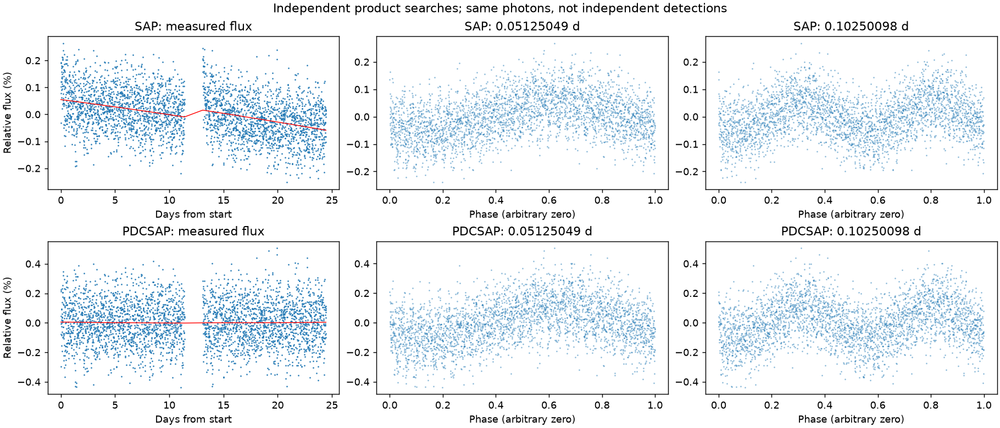
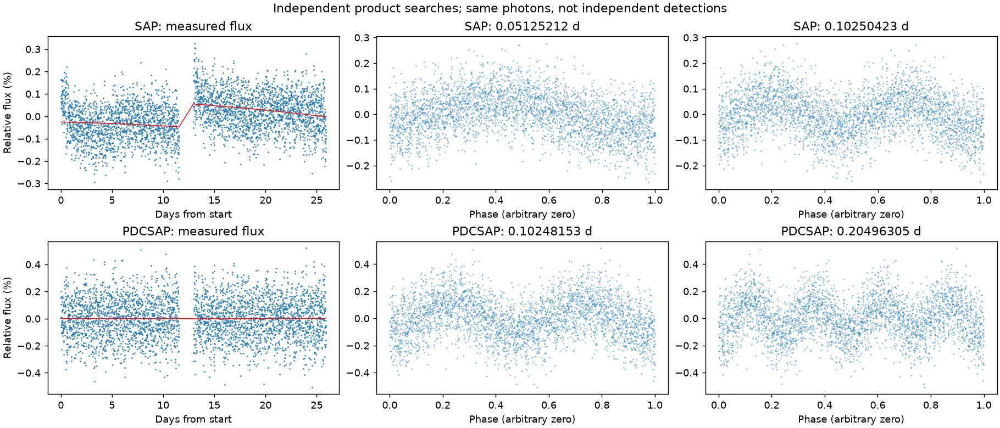
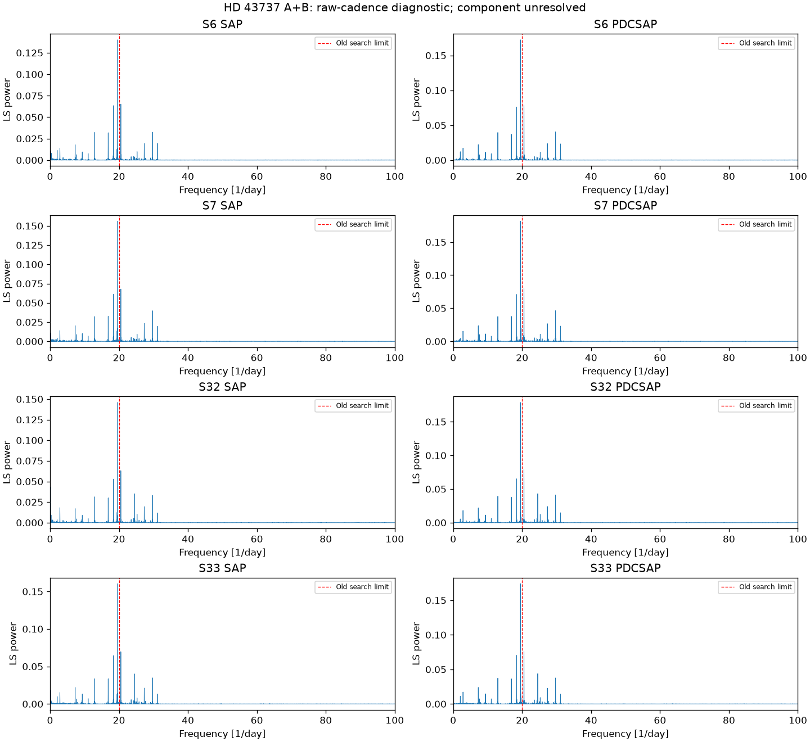

双星混合光中有重复变化，仍不能确定变光分量；原规则合并周期未决。
A：TIC 393386173；B：TIC 393386168；间距约 6.17 角秒，G 星等相差约 0.08。来源确认、新颖性确认和可提交状态均为 false。
| 观测区 | SAP 选定周期／天 | PDCSAP 选定周期／天 |
|---|---|---|
| S6 | 0.05125105 | 0.05125127 |
| S7 | 0.05125049 | 0.05125049 |
| S32 | 0.05125212 | 0.10248153 |
| S33 | 0.05125041 | 0.05125041 |
S32 的 PDCSAP 选出两倍周期；合并后 SAP 保留约 0.05125 天，PDCSAP 有跨时段谐波冲突，最终裁定 unresolved。任何人工偏好都未替换这一结果。


为检查原 0.05 天下限附近的信号，单独搜索 0.01–8 天，未额外分箱、去趋势或筛点。这是事后诊断，不改变冻结检测器。附近多个峰在各段出现，不等于已排除所有采样别名或完成脉动分类。

VSX 本次 144 角秒范围有效返回零条；Fetherolf 三表对 A、B 均无匹配，各表正例均检出。SIMBAD 返回的光谱、测光校准和年轻星空间分布资料未构成当前已确认的先前变光报告。Crossref 关键词搜索仅返回无关结果；VizieR 全目录请求未完成；这些都不证明新颖性。